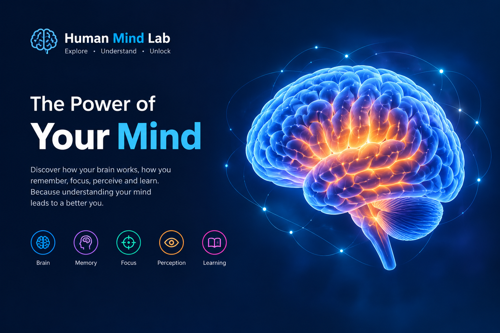

🧠 Brain Explorer
Learn about different parts of the brain and their commonly associated functions.
Explore the Brain →Explore the fascinating world of the human brain, memory, focus and perception.

The human brain is one of the most complex systems in the known world. Human Mind Lab is an educational website designed to explore different aspects of memory, attention, perception and learning.
Explore the sections below and discover how different parts of our everyday thinking work.
Learn about different parts of the brain and their commonly associated functions.
Explore the Brain →Learn about memory and try a simple memory observation experiment.
Enter Memory Lab →Explore attention, concentration and factors that can affect focus.
Enter Focus Lab →Discover how our brain interprets information received through our senses.
Enter Perception Lab →Learning Progress (sample):
Exploration level (sample):
Your brain continuously processes information from your surroundings, even when you are not consciously thinking about every detail.
Sleep is associated with important biological processes including memory consolidation, learning and recovery.
Perception is the process through which the brain interprets information received from the senses.
Start your journey through the Human Mind Lab.